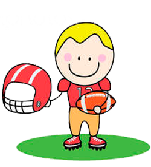

На главную
Американский Футбол

Американский футбол - игра в футбол руками с овальным мячом в квадратном поле. Американский футбол культивируется уже более чем в 40 странах мира. Первые (за пределами Северной Америки) национальные федерации по этому виду спорта возникли в 1970-е. В настоящее время действуют также и региональные объединения.
Oferty Pracy w Polsce
Jobs in Europe